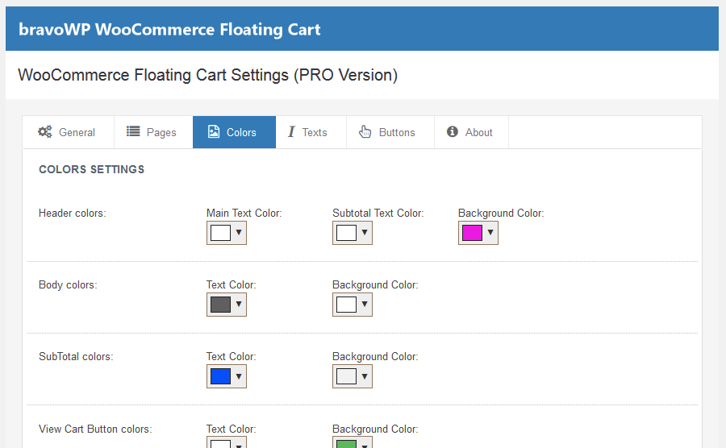

Displays a floating cart at the bottom of your website that shows the current content of the Shopping Cart. Visitors will always have a clear information of the total of their Items in the cart, and will be able to quickly find the Checkout page and the main Cart page.
Thank you for purchasing this plugin. If you have any question or support need, please use the Envato Comments or contact us via our website www.bravowp.com. Thank you!
In the General section you can decide the position and behaviour of the widget on its first load. The widget can be positioned at the bottom right or left of your website.
You can also set wheter the widget should load as expanded or not (user will click on the top bar of the widget to expand and collapse the cart).
The Pages section let you decide on what pages the widget will be rendered. Please note that the widget can NOT be shown on the WooCommerce's "Cart" and "Checkout" page. The widget will, however, always be shown on the Shopping page.
Additionally, you can "force" the widget to be shown or hidden on some specific website URLs. Just type those in the text boxes at the bottom of this page.
By using the color input controls in this section you can fully customize the Wdiget layout and make it a perfect match with the Template and colors of your Shop.
In this section you have the ability to change the various texts displayed in the widget.